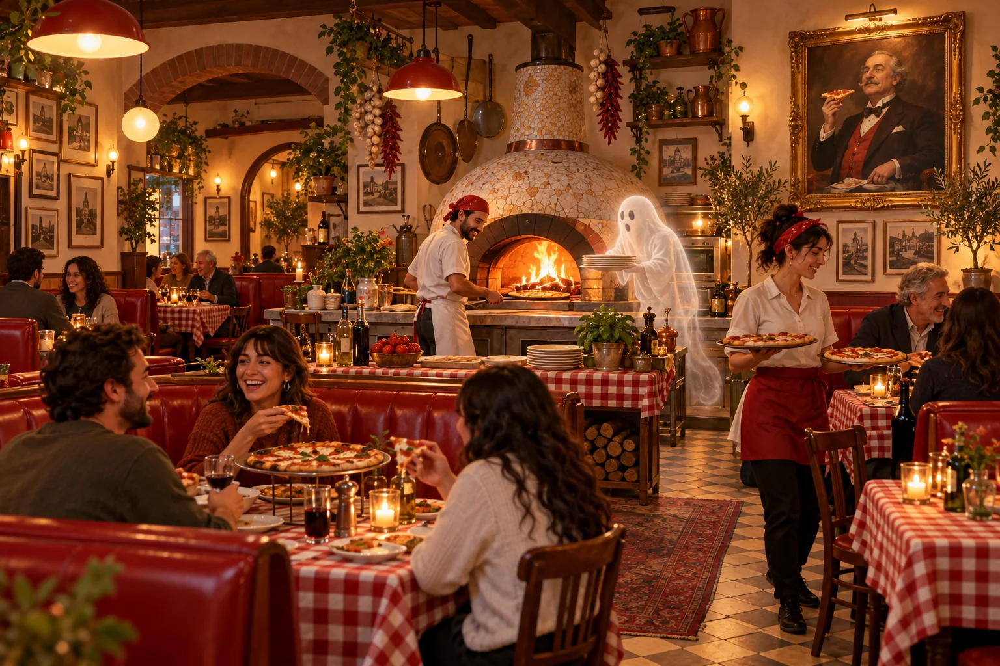
01 / THE HOUSE EXPERIENCETHE PROOFING ROOM COZY HALLOWEEN
The proofing room
A proper pizza night, with one unresolved staffing matter.
Take a look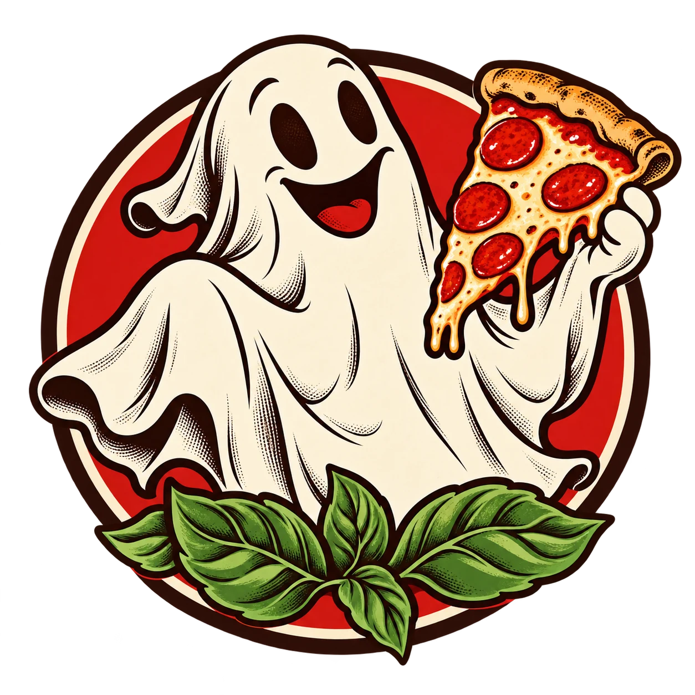
Rest in PizzaNEIGHBORHOOD PIZZA / OCCASIONAL RESURRECTIONSRest in Pizza is a fictional destination. This guide describes an imagined 2026 season; it does not offer bookings, orders, or payments.
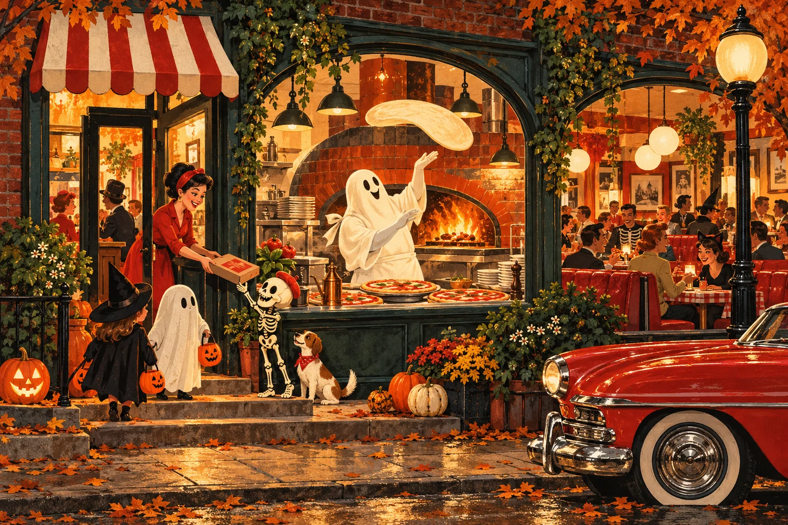
THE NEIGHBORHOOD HAS ACQUIRED A SPIRIT
A neighborhood pizzeria for the living, the dearly departed, and anyone who said they only wanted one slice. Our founder still checks the oven. He has been off payroll since 1913. Come for blistered crust, stay for the garlic knots, and please stop asking the portrait for a discount.
ALL AGES. ALL APPETITES. ONE UNRESOLVED STAFFING MATTER.
ONE HOUSE. THREE OPEN FILES.
The proofing room does supper. The rising garden supplies a little fresh air. The lost-and-found crypt supplies very little closure.

01 / THE HOUSE EXPERIENCEA proper pizza night, with one unresolved staffing matter.
Take a look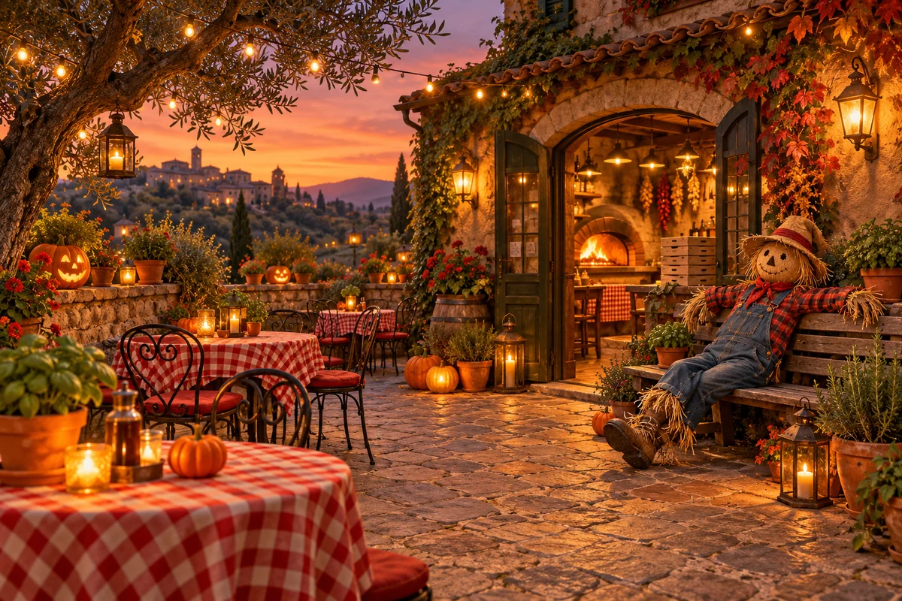
02 / THE HOUSE EXPERIENCEA short wander while the next pie is in the oven.
Take a look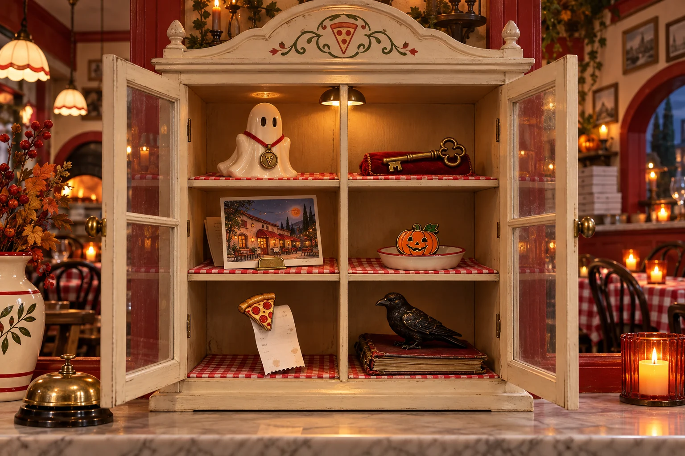
03 / THE HOUSE EXPERIENCESix objects. Several unfinished shifts.
Take a lookA proper pizza night, with one unresolved staffing matter.
Watch the oven turn out wood-fired pies while the founder’s portrait monitors portion control. The living staff handle every order. The former owner only contributes opinions, which remain unpaid.
Fictional design intention: step-free access, flexible seating and room to pause. No real facilities have been verified.
A short wander while the next pie is in the oven.
A lantern-lit courtyard of herb pots, pumpkin faces, and one scarecrow on an extended lunch break. Sit for a while. The basil has heard enough family business.
Fictional design intention: step-free access, flexible seating and room to pause. No real facilities have been verified.
Six objects. Several unfinished shifts.
Browse the house inventory: a ghostly assistant manager, a cellar key, a postcard from a former delivery driver, and further evidence that staff meetings continue after death. Nothing here is for sale.
Fictional design intention: step-free access, flexible seating and room to pause. No real facilities have been verified.
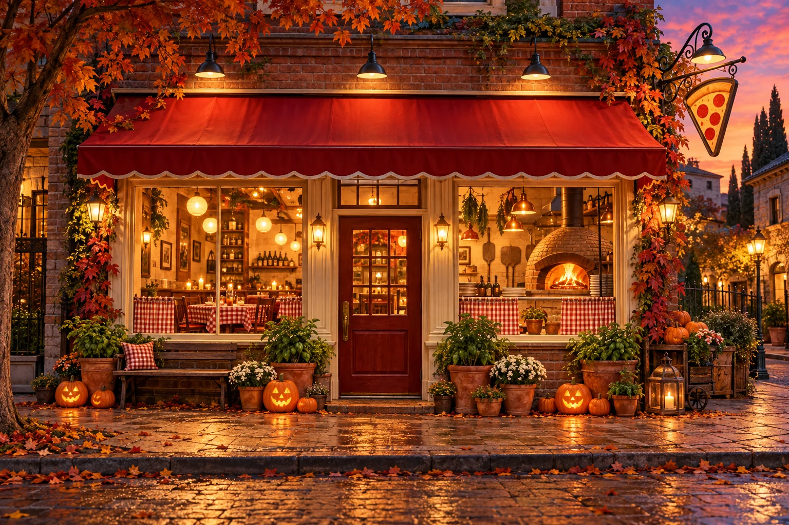
THE ORIGINAL OWNER. THE ORIGINAL OBJECTION.
A FAMILY RECIPE. AN EXTENDED NOTICE PERIOD.
Rest in Pizza began with a hot oven, a handwritten recipe, and a founder whose retirement arrangements proved unusually difficult.
In our fictional 1913, the founder opened a little pizza kitchen and promptly became indispensable. When he departed later that year, the family assumed the usual arrangements would apply. By Tuesday, the oven had been relit and someone had corrected the spelling on the specials board.
Today, the living staff make the pies, answer questions and take their breaks. The founder contributes a cold spot beside the flour sacks and a strong preference for the old mozzarella supplier. His portrait is consulted on heritage matters. Its purchasing authority remains suspended.
The garden came later, when a delivery of pumpkin plants proved difficult to return. The crypt began as lost property. Neither department has improved the filing system, but both give you something to explore while the next pie is in the oven.
A good neighborhood place stays with you.
Ours has taken that rather literally.
THE LOST-AND-FOUND CRYPT
Six things the founder insists came with the premises. The family insists they came with the founder. Browsing only; no objects or staff positions are for sale.
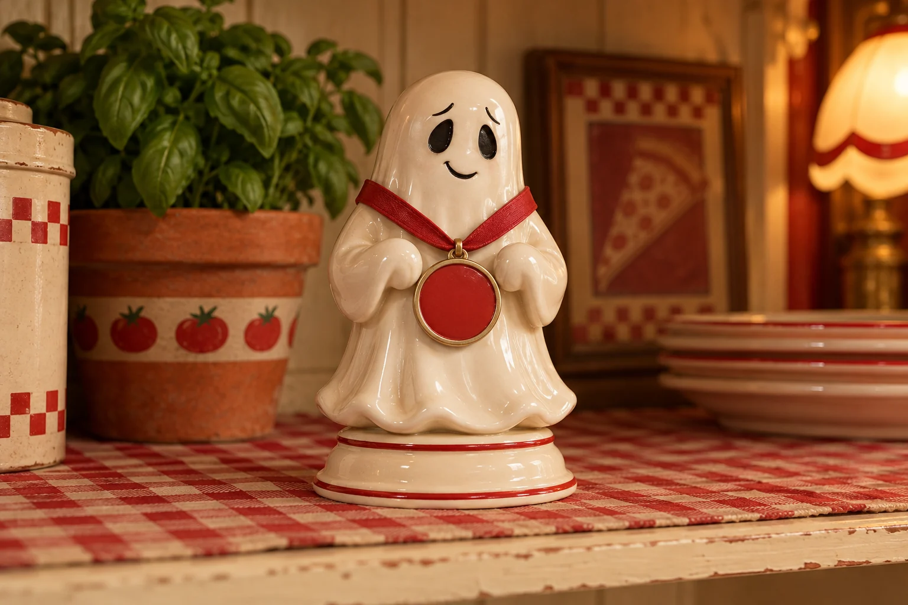
SPECIMEN 01Glazed ceramic · Still on the rota
The ghost claims it was promised a permanent position. Accounts says the wording was unfortunate.
Claimed originThe house collection at Rest in Pizza.
A fictional specimen for browsing. The label is confident; the supporting documentation is missing.
Fictional object and provenance. No authenticity claim or purchase.
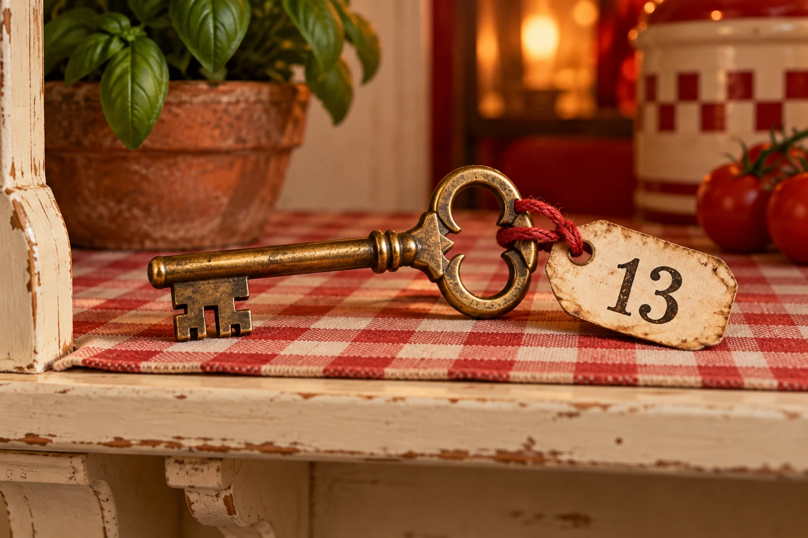
SPECIMEN 02Brass · Access disputed
Opens a room the floor plan describes as a filing error.
Claimed originThe house collection at Rest in Pizza.
A fictional specimen for browsing. The label is confident; the supporting documentation is missing.
Fictional object and provenance. No authenticity claim or purchase.
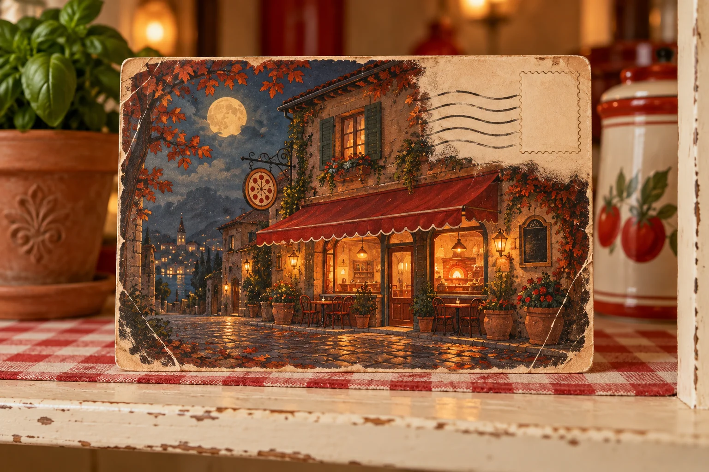
SPECIMEN 03Printed card · Forwarding address uncertain
The previous owner says business is looking up. The postmark suggests otherwise.
Claimed originThe house collection at Rest in Pizza.
A fictional specimen for browsing. The label is confident; the supporting documentation is missing.
Fictional object and provenance. No authenticity claim or purchase.
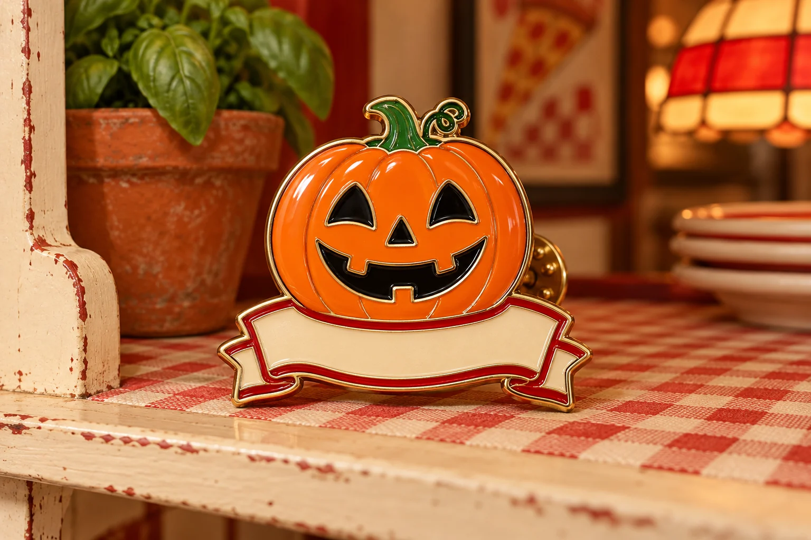
SPECIMEN 04Enamel pin · Seasonal appointment
Passed induction. Has yet to complete the knife-safety module.
Claimed originThe house collection at Rest in Pizza.
A fictional specimen for browsing. The label is confident; the supporting documentation is missing.
Fictional object and provenance. No authenticity claim or purchase.
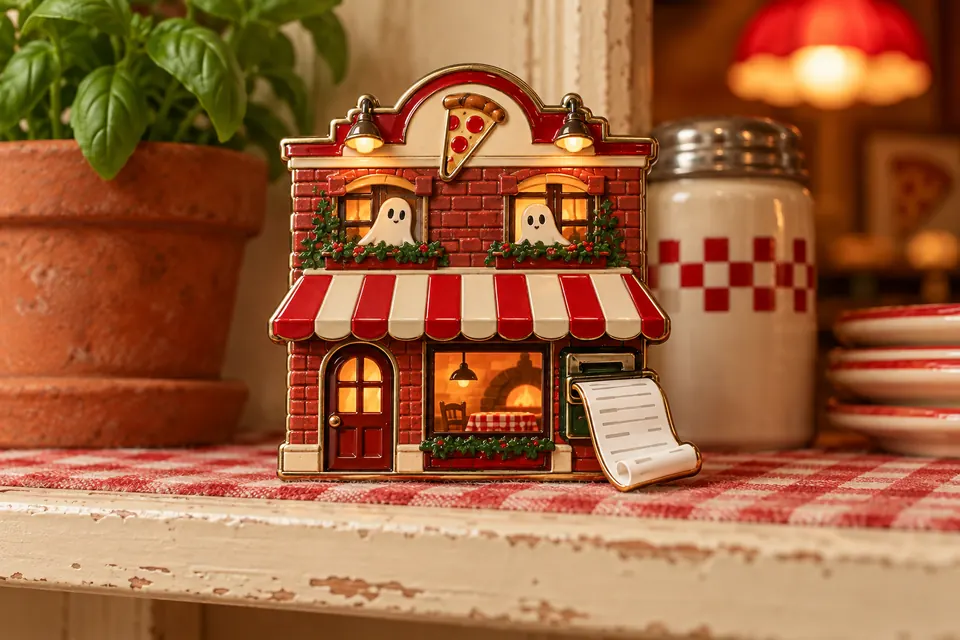
SPECIMEN 05Souvenir magnet · Strong attachment
Keeps returning to the invoice. The finance team calls this retention.
Claimed originThe house collection at Rest in Pizza.
A fictional specimen for browsing. The label is confident; the supporting documentation is missing.
Fictional object and provenance. No authenticity claim or purchase.
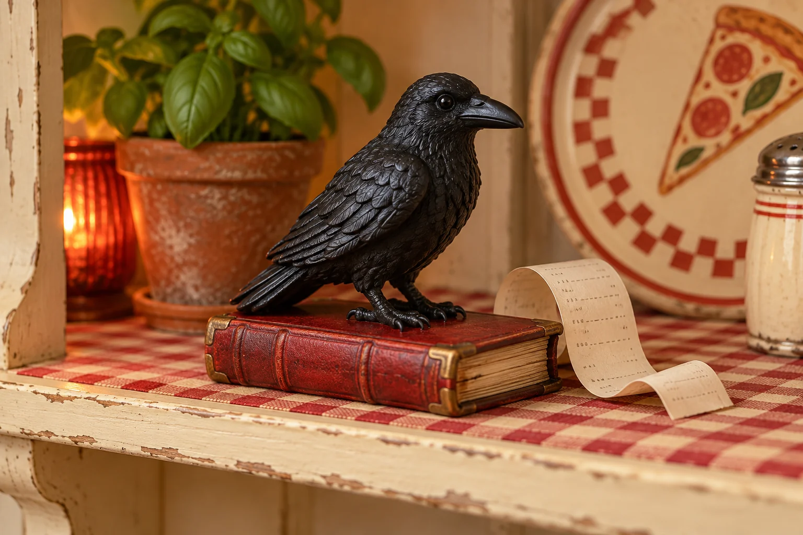
SPECIMEN 06Painted resin · Receipt retained
An excellent attendance record. An extremely conservative approach to expenses.
Claimed originThe house collection at Rest in Pizza.
A fictional specimen for browsing. The label is confident; the supporting documentation is missing.
Fictional object and provenance. No authenticity claim or purchase.
VISITOR SERVICES / DRAWING NO. 013
Find the proofing room, rising garden and crypt. A short visit is still a perfectly respectable pizza night.
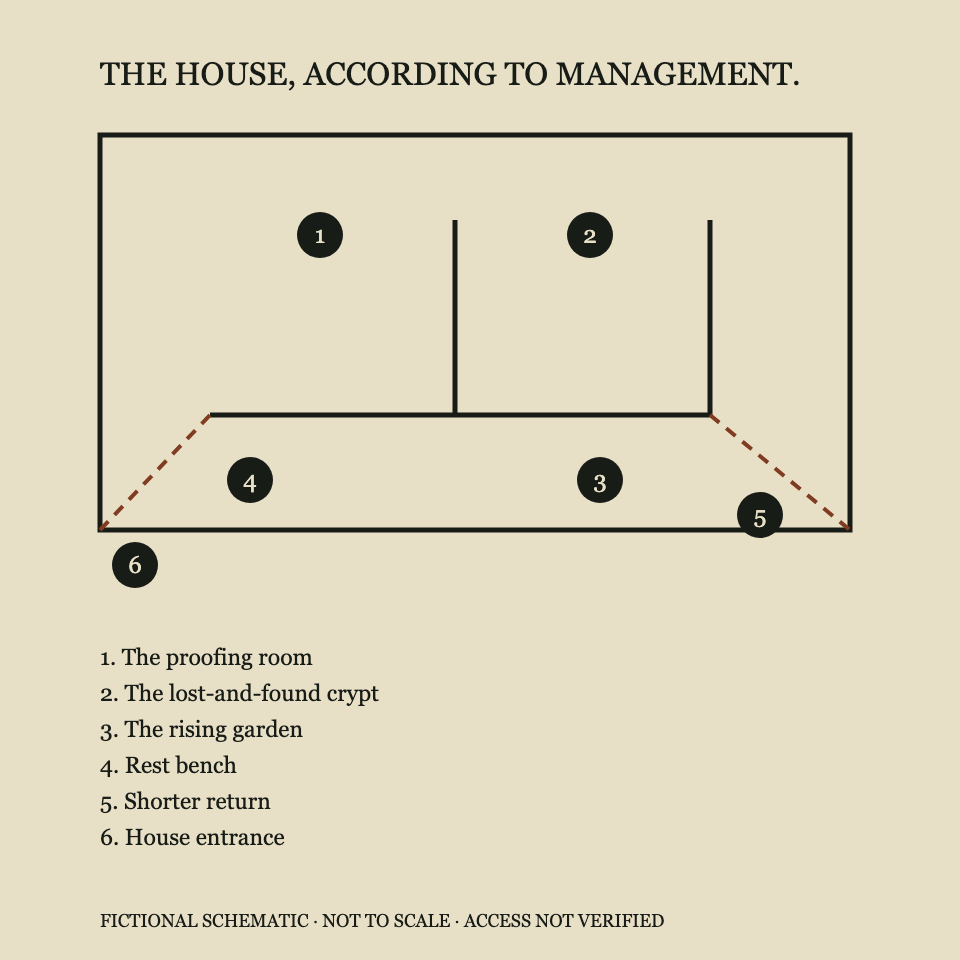
Imagined location at Rest in Pizza.
Imagined location at Rest in Pizza.
Imagined location at Rest in Pizza.
Fictional schematic, not to scale. Facilities, routes and access are imagined; this is not real navigation.
SAVE A TABLE IN YOUR IMAGINATION
Bring the family, bring a friend, or bring a very specific opinion about crust. Build a fictional visit with supper, a garden pause and a look at the house collection.
LESS GUESSWORK. MORE GOOD TIMES.
Make the night your own. Here’s how the imagined experience is designed.
Take a break. Skip a department.
The pizza does not require a full itinerary.
No. Rest in Pizza is a fictional Halloween parody property. Names, food, prices, facilities and policies are invented for creative exploration.
Families, hungry friend groups, pizza devotees, and anyone who prefers a cozy haunting to a jump scare.
This creator workspace and its marketing pack do not accept bookings, orders, payments or mailing-list subscriptions.
Ingredients and V tags are working copy, not allergy assurances. Access and sensory details are fictional intentions and require real-world confirmation before use.
No. The imagined house spaces and collection are free to explore; food and drinks have separate menu prices. You can skip any part of the itinerary. All ages in this fictional concept; children stay with their grown-ups.
Choose a concept date, an offered arrival, your party size and the spaces you want to explore. Save keeps the plan in this browser for this property. Downloads are fictional itineraries, not tickets or reservations.
Halloween decorations and theatrical lighting are imagined. No strobes, chasing or touching are part of the concept. Outdoor spaces are weather dependent. No real facilities or operating policies are promised.
YOUR NEIGHBORHOOD. SLIGHTLY LESS ALIVE.
The oven is warm. The welcome is warmer than the founder.